#Run Navigate ports from tabs: Mux, Groups, Processing; #Will support all boards it is XCD (Main) or ENC (SDI) #This script assume that the Java GUI is already running. #Input: boardNum = [1..4] #Input: portNum = [1..10] #Input: ethPortType = [in, out] #Input: portClick = [1..2] 1 = single click, 2 = double click #Usage: manage_input_mux.sikuli muxAction=delete muxName=InputMux1 ############################################################### #common code for every sikuli code. Do not remove this section from me7klib import * ############################################################### #YOUR code start here ############################################################### #This is your check for the inputs that you are expecting. def Check_args(): #checking for required arguments Check_arg('tabName') Check_arg('boardNum') Check_arg('portNum') if not Get_arg('portClick'): Set_arg('portClick', '1') Print_debug('portClick is not defined. Will use 1 as default.') Check_args() ############################################################ #Main program definitions code start from this point #Any global variables here my_tab = Get_arg('tabName') my_board = Get_arg('boardNum') my_port = Get_arg('portNum') clicktype = Get_arg('portClick') eth_port = my_board.lower() + '/' + my_port.lower() ethPortDict = { '4/1':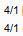, '4/2':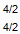, '4/3':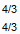, '4/4':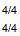, '4/5':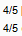, '4/6':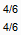, '4/7':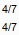, '4/8':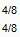, '4/9':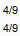, '4/10':Pattern(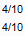).targetOffset(0,-8) } boardDict = { '1': 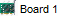, '2':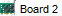, '3':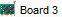, '4':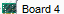 } boardSelectedDict = { '1': , '2':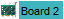, '3':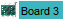, '4':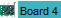 } #Any definitions are here def Nav_Boards(): Set_arg('tabName', my_tab) RunSikuli('nav_tabs') if exists(Pattern().exact()): doubleClick(Pattern().exact()); wait(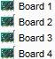) if boardDict.has_key(my_board): #select board myboardimg = boardDict.get(my_board) find(Pattern(myboardimg).exact()); click(Pattern(myboardimg).exact()) myselectedimg = boardSelectedDict.get(my_board) wait(Pattern(myselectedimg).exact()) if my_tab.lower() == 'mux' or my_tab.lower() == 'processing': doubleClick(Pattern(myselectedimg).exact()) else: Exit_program('Invalid board range provided outside of (1..4): ' + my_board, 2) def Nav_Ports(): if my_tab.lower() == 'mux': #select port if ethPortDict.has_key(eth_port): #find and click on the correct port Check_arg('ethPortType') my_eth_type = Get_arg('ethPortType') if my_eth_type.lower() == 'in': eth_input_offset = -8 elif my_eth_type.lower() == 'out': eth_input_offset = 10 else: Exit_program('Invalid ethPortType entered not in range [in/out]: ' + eth_input_offset, 2) myethimg = ethPortDict.get(eth_port) find(Pattern(myethimg).exact()) if clicktype == '1': click(Pattern(myethimg).exact().targetOffset(0,eth_input_offset)); wait(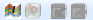) elif clicktype == '2': doubleClick(Pattern(myethimg).exact().targetOffset(0,eth_input_offset)); wait() else: Exit_program('Invalid portClick entered not in range [1..2]: ' + clicktype, 2) if exists(): Print_debug('Selected eth port: ' + eth_port) else: Exit_program('Failed to select eth port: ' + eth_port) else: Exit_program('Invalid ethernet port: ' + eth_port, 2) elif my_tab.lower() == 'processing' or my_tab.lower() == 'groups': if boardSelectedDict.has_key(my_board): myboardimg = boardSelectedDict.get(my_board) eth_input_offset = int(my_port)*18 find(Pattern(myboardimg).exact()) if clicktype == '1': click(Pattern(myboardimg).exact().targetOffset(0,eth_input_offset)) elif clicktype == '2': doubleClick(Pattern(myboardimg).exact().targetOffset(0,eth_input_offset)) else: Exit_program('Invalid portClick entered not in range [1..2]: ' + clicktype, 2) ####################################################### #Main program flow Nav_Boards() Nav_Ports()